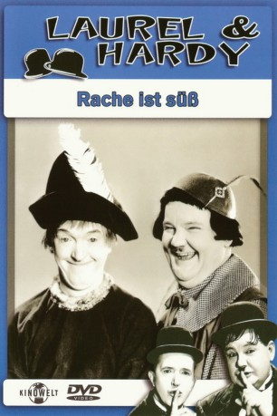
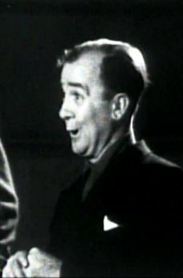

#6206 Dick und Doof - Abenteuer im Spielzeugland
Alternativ: Babes in Toyland
 
 IMDB-Wertung: 7.4 / 10
IMDB-Wertung: 7.4 / 10  Metascore: 0
Metascore: 0 
Stannie Dum und Ollie Dee leben im Spielzeugland bei der Witwe Peep und deren schöner Tochter Bo-Peep zur Untermiete. Zuvor müssen sie allerdings die Heirat der schönen Bo-Peep mit dem bösartigen Barnaby verhindern, der Witwe Peep mit einer Hypothek erpresst. Und so verkleidet sich Stannie am Hochzeitstag als Braut. Der erboste Barnaby marschiert mit einer Armee der bösen Mächte ins Spielzeugland ein, um sich an Stan und Ollie und Bo-Peep zu
Jahr: 1934
Dauer: 77 Minuten
FSK: 6
Land: USA Studio: MGMTonspuren: DTS - ,
Untertitel:
Auflösung: 1080p (1440x1080) Größe: 6113 MB
Genre: Komödie, Fantasy, Familie, Musical
Regisseur: Gus Meins, Charley Rogers
Drehbuch: Sebastian Junger
Soundtrack:
Darsteller:
- Charlotte Henry als Bo-Peep
 Henry Brandon als Barnaby
Henry Brandon als Barnaby Stan Laurel als Stannie Dum
Stan Laurel als Stannie Dum Oliver Hardy als Ollie Dee
Oliver Hardy als Ollie Dee Richard Alexander als King's Guard , uncredited
Richard Alexander als King's Guard , uncredited- Scotty Beckett als Schoolboy , uncredited
-  Billy Bletcher als Chief of Police , uncredited
- Eddie Borden als Demon Bogeyman , uncredited
- Carl R. Botefuhr als Schoolboy , uncredited
- Tommy Bupp als Schoolboy , uncredited
- Bobby Burns als Townsman , uncredited
- Ellen Corby als Townswoman at Tom-Tom's Trial , uncredited
- Alice Dahl als Little Miss Muffett , uncredited
- Jean Darling als Curly Locks , uncredited
- Johnny Downs als Little Boy Blue , uncredited
- Edward Earle als Townsman , uncredited
- Marianne Edwards als Schoolgirl , uncredited
 John George als Barnaby's Minion , uncredited
John George als Barnaby's Minion , uncredited- Sumner Getchell als Little Jack Horner , uncredited
 Dickie Jones als Schoolboy , uncredited
Dickie Jones als Schoolboy , uncredited- Alice Lake als Townswoman , uncredited
- Joy Lane als Schoolgirl , uncredited
- Kewpie Morgan als Old King Cole , uncredited
- Margaret Nearing als Townswoman , uncredited
- Angelo Rossitto als Elmer - Second Little Pig / 1st Sandman in Cave , uncredited
- Jacqueline Taylor als Schoolgirl , uncredited
- Jerry Tucker als Schoolboy , uncredited
- Marie Wilson als Mary Quite Contrary , uncredited
- Virginia Karns als Mother Goose
- Felix Knight als Tom-Tom
- Florence Roberts als Widow Peep
- Ernie Alexander als Townsman , uncredited
- Frank Austin als Justice of the Peace , uncredited
- Eddie Baker als Dunker , uncredited
- Georgie Billings als Schoolboy , uncredited
- Charles Bimbo als Jack in the Box , uncredited
- Buster Brodie als Jack in the Box , uncredited
- Anne Brown als Sally Waters , uncredited
- William Burress als The Toy Maker , uncredited
- Ricardo Lord Cezon als Baby in Tree Top , uncredited
- Russell Coles als Tom Tucker , uncredited
- Zebedy Colt als Willie - Third Little Pig , uncredited
- Alice Cooke als Mother Hubbard , uncredited
- Baldwin Cooke als Policeman , uncredited
- Charles Dorety als Townsman , uncredited
- Pete Gordon als Cat and the Fiddle , uncredited
- Charles Hagar als Boy , uncredited
- Bobbie Hale als Townsman , uncredited
- Charlie Hall als Townsman , uncredited
- Jack Hill als Townsman , uncredited
Datei: X:\1900-1949\Dick und Doof - Abenteuer im Spielzeugland (1934, FSK6, 1440x1080).mkv seit 16.05.2017
Festplatte: HD 1900-1970
 Es gibt insgesamt 80 Filme in der Gruppe '1900-1949'
Es gibt insgesamt 80 Filme in der Gruppe '1900-1949'